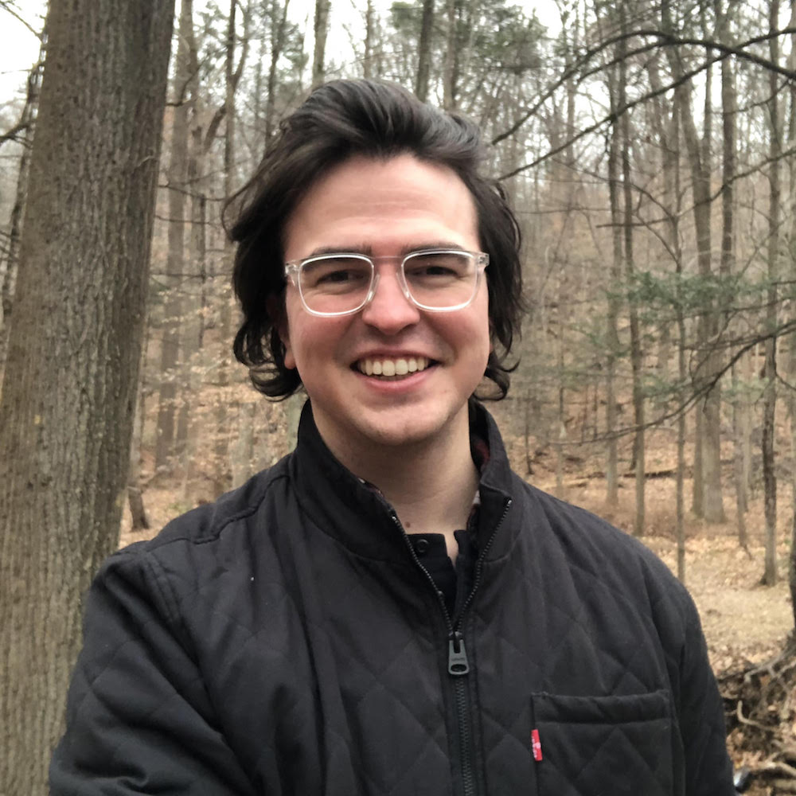
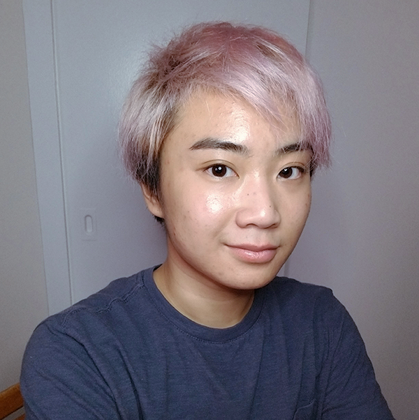

Students
Prospective Students:
I will be recruiting PhD students to start in Fall 2020. If you are a prospective PhD student interested in working with me, please apply to the UMSI PhD program. If you are a current UM masters student or undergraduate student interested in working with me, please email me with your CV/resume and research interests. I am particularly interested in working with students who want to conduct research on one or more of the following topics: 1) life transitions and social technologies 2) transgender and/or LGBQ+ people and social technologies 3) social media content moderation and marginalized populations.
PhD Students
Dan Delmonaco
PhD Student, co-advised by Gabi Marcu
pronouns:
he/him
research interests:
health information practices, information access, digital resources
Hayden Le
PhD Student, co-advised by Libby Hemphill
pronouns:
they/them or he/him
research interests:
computer-mediated communication, computational social science, natural language processing, human-computer interaction, behavior change
Masters Students

Taika Augustaitis
Masters Student, Information
pronouns:
he/him
research interests:
social media, social determinants of health, human-computer interaction, information seeking needs of marginalized communities

Justin Buss
Masters Student, Information
pronouns:
he/him
research interests:
gender, social media, identity formation and management, information behaviors

Dykee Gorrell
REMS Visiting Masters Student
pronouns:
she/her
research interests:
data science, machine learning algorithms, technology, climate change, food deserts, carceral systems, black transgender women, homelessness

Denny Starks
Masters Student, Information
pronouns:
they/them
research interests:
understanding how transgender and non-binary people of color practice safety and the types of violence they experience in different contexts and environments - to design technology to support their safety
Undergraduate Students

AJ Carter
Undergraduate Student, Information
pronouns:
he/him
research interests:
social media, LGBTQ+, sociocultural anthropology

Shanley Corvite
Undergraduate Student, Information
pronouns:
she/her
research interests:
social media, user experience

Jasmine Glover
Undergraduate Student, Industrial and Operations Engineering
pronouns:
she/her
research interests:
social media, behavior, data analytics

Tianxiao (Sharol) Liu
Undergraduate Student, Psychology
pronouns:
she/her
research interests:
HCI, social media, user experience, public health

Lingbo Wang
Undergraduate Student, Statistics
pronouns:
she/her
research interests:
social media, computational social science, marketing models

Zu Weinger
Undergraduate Student, Sociology
pronouns:
he/him
research interests:
trans people's experiences and interactions with technology, social media, and the world

Brookelyn Wheeler
Undergraduate Student, Biopsychology, Cognition, and Neuroscience
pronouns:
she/her
research interests:
human thoughts and behavior